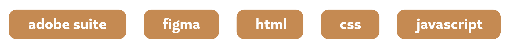

Create promotional graphics that visually compliment artists’ work, follow established brand guides, prepare files for print and social media, meet weekly to report progress, and organize and update logo, social media, and print files for next intern.
Work with client to outline final product requirements and deliverables, set deadlines and checkpoints for progress reports and communicate regularly, impliment client feedback, and explain design decisions when necessary.
